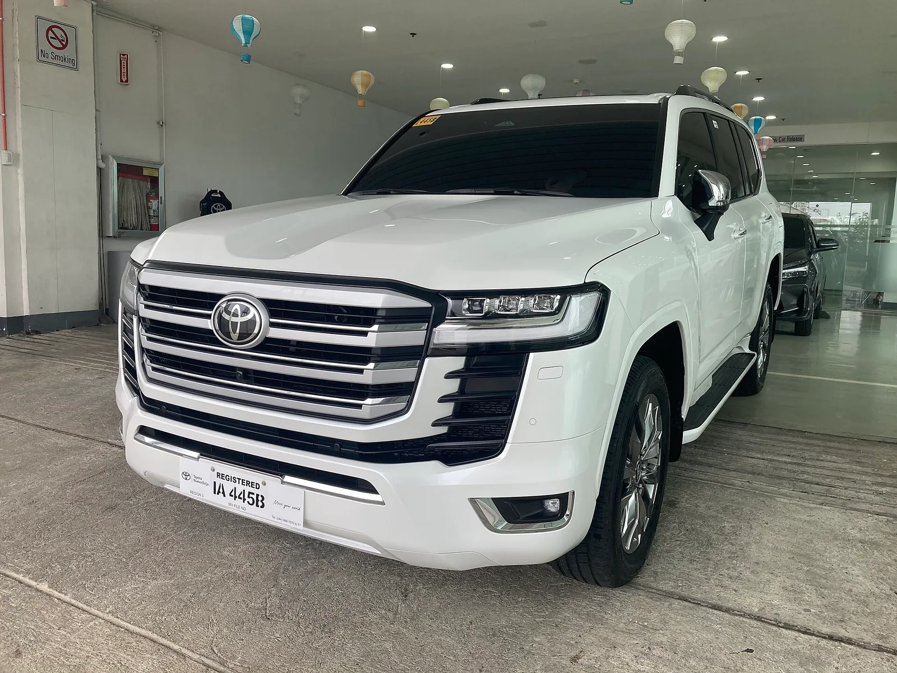

▲ 랜드크루저는 잔가가 높은 차로 꼽힌다. 다만 감가가 없는 것은 아니다
랜드크루저에는 오래된 수식어가 붙습니다.
"타다 팔아도 손해가 없다", 심하면 "값이 오른다"고까지 합니다.
실제 숫자를 보면 절반만 맞습니다. 잔가가 높은 것은 사실이지만, 감가가 없는 것은 아닙니다.
1. 실제 숫자
먼저 결론부터 놓고 보겠습니다.
| 기간 | 감가율 | 금액 |
|---|---|---|
| 3년 | 28.47% | — |
| 5년 | 약 39% | 감가액 1만7,897달러 잔존가 4만1,198달러 |
5년에 39%가 빠집니다. 1억 원짜리 차라면 6,100만 원이 남는 셈입니다.
이건 매우 좋은 수치입니다. 다만 "감가가 없다"거나 "오른다"와는 다른 이야기입니다. 흔히 도는 표현이 실제보다 한 칸 과장돼 있습니다.
2. 39%가 좋은 숫자인 이유
39%라는 수치는 다른 차와 비교해야 의미가 잡힙니다.
📍 대형 럭셔리 SUV의 일반적인 감가
이 세그먼트의 5년 감가율은 50~60%대가 드물지 않습니다. 신차 가격이 높고, 유지비 부담 탓에 중고 수요가 얇아지기 때문입니다. 실제로 국내외에서 5년에 70% 넘게 빠지는 대형 SUV 사례가 반복해서 화제가 됩니다. 이 기준에서 보면 랜드크루저의 39%는 확연히 앞선 수치입니다.
즉 "감가가 없다"가 아니라 "동급에서 감가가 가장 적은 축"이 정확한 표현입니다.
3. 왜 값이 잘 안 빠지나
| 요인 | 내용 |
|---|---|
| 내구성 | 혹독한 환경에서 수십 년 검증된 이력 |
| 글로벌 수요 | 중동·아프리카·호주 등 세계 각지에서 수요가 있다 |
| 긴 수명 | 주행거리가 많아도 거래가 성립한다 |
| 부품 공급 | 오래된 연식도 정비가 가능하다 |
| 공급 제한 | 지역에 따라 물량이 넉넉하지 않다 |
두 번째 항목이 특히 큽니다. 대부분의 차는 팔 수 있는 시장이 국내로 한정되지만, 랜드크루저는 국경 밖에도 수요가 있습니다. 수요층이 넓으면 가격이 잘 무너지지 않습니다.

▲ 주행거리가 많아도 거래가 성립한다는 점이 잔가를 떠받친다 ⓒ Wikimedia Commons
4. 그런데 4러너가 더 낫다
흥미로운 지점이 하나 있습니다. 잔존가치만 놓고 보면 같은 토요타의 4러너가 랜드크루저보다 앞섭니다.
이유는 가격대에 있습니다. 랜드크루저는 신차 값 자체가 높습니다. 감가율이 같아도 빠지는 절대 금액이 큽니다. 반면 4러너는 시작가가 낮아 중고 시장의 수요층이 훨씬 두껍습니다.
| 구분 | 의미 |
|---|---|
| 감가율(%) | 비율 — 차값 대비 얼마나 빠졌나 |
| 감가액(원) | 실제로 내 지갑에서 사라진 돈 |
중고차를 이야기할 때 자주 섞이는 두 값입니다. "감가율이 낮다"는 말이 곧 "손해가 적다"는 뜻은 아닙니다. 비싼 차는 감가율이 낮아도 잃는 금액이 큽니다.
5. "값이 오른다"는 이야기는 어디서 나왔나
랜드크루저가 실제로 값이 오른 사례가 없지는 않습니다. 다만 조건이 붙습니다.
✅ 값이 오르는 경우는 이런 조건에서
· 단종된 특정 세대 — 더 이상 만들지 않는 형태
· 수동변속기·디젤 등 지금은 못 사는 사양
· 상태가 예외적으로 좋은 저주행 개체
· 특정 시장의 일시적 수급 불균형
이건 신차를 사서 5년 타는 상황과는 다른 이야기입니다. 컬렉터 시장의 특정 개체에서 벌어지는 일을, 지금 신차를 사는 사람의 기대치로 옮기면 곤란합니다.
▲ "값이 오른다"는 이야기는 단종된 특정 세대와 사양에 한정된 경우가 많다 ⓒ Wikimedia Commons

▲ 수요층이 넓은 차는 값이 잘 무너지지 않는다 ⓒ David Howard, CC BY-SA 2.0, Wikimedia Commons
6. 차를 고를 때 옮겨올 수 있는 기준
랜드크루저의 잔가를 만드는 조건은 다른 차를 볼 때도 그대로 쓸 수 있습니다.
| 조건 | 확인 방법 |
|---|---|
| 수요층이 넓다 | 중고 매물 거래 회전율을 본다 |
| 고장 이력이 적다 | 동일 차종 리콜·결함 사례 검색 |
| 부품 수급이 원활 | 판매 기간이 길고 물량이 많은 모델 |
| 후속 주기가 길다 | 풀체인지 직전 구매는 잔가에 불리 |
7. 정리
랜드크루저의 5년 감가율은 약 39%, 3년은 28.47%입니다. 2026년형 기준 5년 뒤 감가액은 1만7,897달러, 잔존가는 4만1,198달러입니다.
동급 대형 SUV가 50~60%대인 것을 감안하면 확연히 좋은 수치입니다. 다만 "감가가 없다"거나 "오른다"는 표현은 과장입니다.
그리고 잔가만 보면 4러너가 더 낫습니다. 감가율이 낮아도 차값이 비싸면 실제로 사라지는 금액은 커집니다. 비율과 금액을 구분해서 봐야 하는 이유입니다.